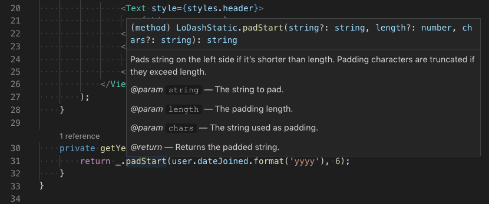
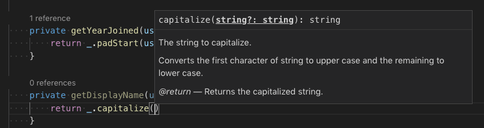
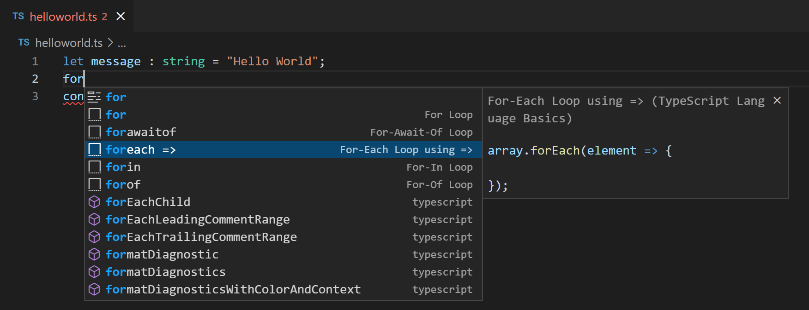
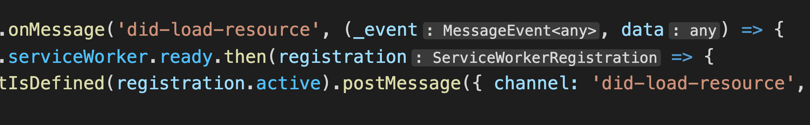
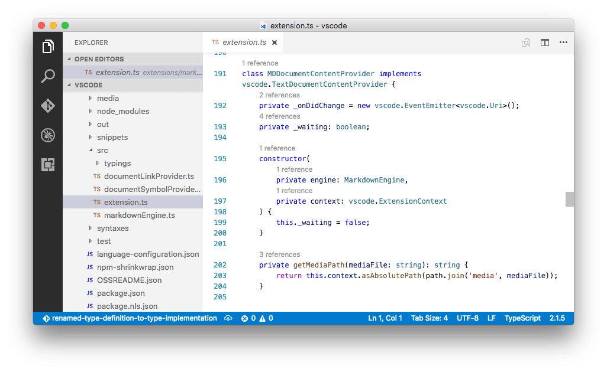
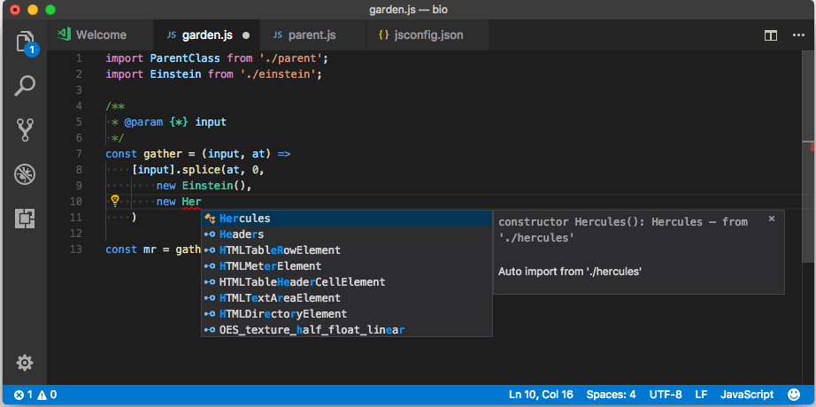
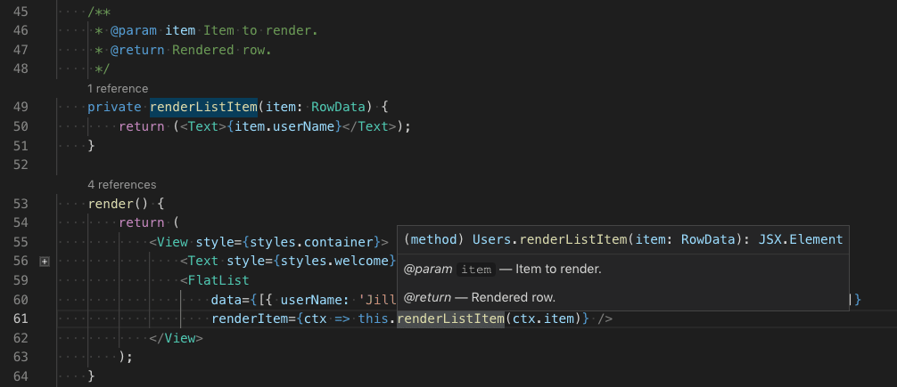

Editing TypeScript
Visual Studio Code has great editing support for TypeScript. This article goes into depth on the editing and programming language features that come built-in to VS Code. If you'd like to know more about general editing features in VS Code, such as keyboard shortcuts, multi-cursors, search, and find and replace, you can read Basic Editing.
IntelliSense
IntelliSense shows you intelligent code completion, hover information, and signature help so that you can write code more quickly and correctly.

VS Code provides IntelliSense for individual TypeScript files as well as TypeScript tsconfig.json projects.
Hover information
Hover over a TypeScript symbol to quickly see its type information and relevant documentation:

You can also show the hover information at the current cursor position with the ⌘K ⌘I (Windows, Linux Ctrl+K Ctrl+I) keyboard shortcut.
Signature help
As you write a TypeScript function call, VS Code shows information about the function signature and highlights the parameter that you are currently completing:

Signature help is shown automatically when you type a ( or , within a function call. Use ⇧⌘Space (Windows, Linux Ctrl+Shift+Space) to manually trigger signature help.
Snippets
VS Code includes basic TypeScript snippets that are suggested as you type;

You can install extensions to get additional snippets or define your own snippets for TypeScript. See User Defined Snippets for more information.
Tip: You can disable snippets by setting
editor.snippetSuggestionsto"none"in your settings file. If you'd like to see snippets, you can specify the order relative to suggestions; at the top ("top"), at the bottom ("bottom"), or inlined ordered alphabetically ("inline"). The default is"inline".
Inlay hints
Inlay hints add additional inline information to source code to help you understand what the code does.
Parameter name inlay hints show the names of parameters in function calls:

This can help you understand the meaning of each argument at a glance, which is especially helpful for functions that take Boolean flags or have parameters that are easy to mix up.
To enable parameter name hints, set typescript.inlayHints.parameterNames.enabled. There are three possible values:
none— Disable parameter inlay hints.literals— Only show inlay hints for literals (string, number, Boolean).all— Show inlay hints for all arguments.
Variable type inlay hints show the types of variables that don't have explicit type annotations.
Setting: typescript.inlayHints.variableTypes.enabled

Property type inlay hints show the type of class properties that don't have an explicit type annotation.
Setting: typescript.inlayHints.propertyDeclarationTypes.enabled

Parameter type hints show the types of implicitly typed parameters.
Setting: typescript.inlayHints.parameterTypes.enabled

Return type inlay hints show the return types of functions that don't have an explicit type annotation.
Setting: typescript.inlayHints.functionLikeReturnTypes.enabled

References CodeLens
The TypeScript references CodeLens displays an inline count of reference for classes, interfaces, methods, properties, and exported objects:

You can enable this by setting "typescript.referencesCodeLens.enabled": true in the User Settings file.
Click on the reference count to quickly browse a list of references:

Implementations CodeLens
The TypeScript implementations CodeLens displays the number of implementors of an interface:

You can enable this by setting "typescript.implementationsCodeLens.enabled": true.
As with the references CodeLens, you can click on the implementation count to quickly browse a list of all implementations.
Auto imports
Automatic imports speed up coding by helping you find available symbols and automatically adding imports for them.
Just start typing to see suggestions for all available TypeScript symbols in your current project.

If you choose one of the suggestions from another file or module, VS Code will automatically add an import for it. In this example, VS Code adds an import for Hercules to the top of the file:

You can disable auto imports by setting "typescript.suggest.autoImports": false.
JSX and auto closing tags
VS Code's TypeScript features also work with JSX. To use JSX in your TypeScript, use the *.tsx file extension instead of the normal *.ts:

VS Code also includes JSX-specific features such as autoclosing of JSX tags in TypeScript:
Set "typescript.autoClosingTags" to false to disable JSX tag closing.
JSDoc support
VS Code's TypeScript IntelliSense understands many standard JSDoc annotations, and uses them to show typing information and documentation in suggestions, hover information, and signature help.

Keep in mind that when using JSDoc for TypeScript code, you should not include type annotations. The TypeScript compiler only uses TypeScript type annotations and ignores those from JSDoc.
To disable JSDoc comment suggestions in TypeScript, set "typescript.suggest.completeJSDocs": false.
Code navigation
Code navigation lets you quickly navigate TypeScript projects.
- Go to Definition F12 - Go to the source code of a symbol definition.
- Peek Definition ⌥F12 (Windows Alt+F12, Linux Ctrl+Shift+F10) - Bring up a Peek window that shows the definition of a symbol.
- Go to References ⇧F12 (Windows, Linux Shift+F12) - Show all references to a symbol.
- Go to Type Definition - Go to the type that defines a symbol. For an instance of a class, this will reveal the class itself instead of where the instance is defined.
- Go to Implementation ⌘F12 (Windows, Linux Ctrl+F12) - Go to the implementations of an interface or abstract method.
You can navigate via symbol search using the Go to Symbol commands from the Command Palette (⇧⌘P (Windows, Linux Ctrl+Shift+P)).
- Go to Symbol in File ⇧⌘O (Windows, Linux Ctrl+Shift+O)
- Go to Symbol in Workspace ⌘T (Windows, Linux Ctrl+T)
Formatting
VS Code includes a TypeScript formatter that provides basic code formatting with reasonable defaults.
Use the typescript.format.* settings to configure the built-in formatter, such as making braces appear on their own line. Or, if the built-in formatter is getting in the way, set "typescript.format.enable" to false to disable it.
For more specialized code formatting styles, try installing one of the formatting extensions from the VS Code marketplace.
Syntax highlighting and semantic highlighting
In addition to syntax highlighting, TypeScript and JavaScript also provide semantic highlighting.
Syntax highlighting colors the text based on lexical rules. Semantic highlighting enriches the syntax coloring based on resolved symbol information from the language service.
Whether semantic highlighting is visible depends on the current color theme. Each theme can configure whether to display semantic highlighting and how it styles the semantic tokens.
If semantic highlighting is enabled and the color theme has a corresponding styling rule defined, different colors and styles can be seen.
Semantic highlighting can change colors based on:
- The resolved type of a symbol: namespace, variable, property, variable, class, interface, typeParameter.
- Whether the variable/property is read-only (const) or modifiable.
- Whether the variable/property type is callable (a function type) or not.
Next steps
Read on to find out about:
- Refactor TypeScript - Learn about the useful refactorings available for TypeScript.
- Debugging TypeScript - Configure the debugger for your TypeScript project.